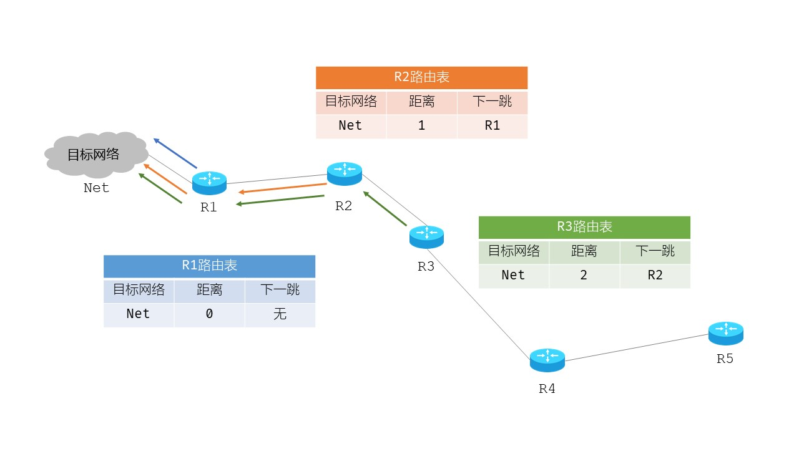

路由信息协议 RIP
- 概述 Overview
- RIP-Routing Information Protocol，路由信息协议，属于内部网关路由协议IGP；当前版本为RIP2
- 基于距离矢量DV-distance vector的路由选择协议，使用跳数Hop count作为度量Metric到目标网络的距离，即：路由器到目标网络所经过的路由器个数
- 特别的：路由器到直连网络不需要经过其它路由器，所以跳数是0，即：距离为0
- 最大距离15；16表示不可达
- 使用UDP协议，按照 固定时间 间隔，以 广播 RIP报文的方式，和 相邻 路由器交换 全部 路由信息
- 路由交换基于直连路由
- 特点 Features
- RIP简单的认为：距离越短，路由质量越高
- RIP最大支持15跳，适合小型网络
- RIP具备负载均衡：当路由等价时，轮流使用路由
- RIP通过3个定时器动态维护路由
- 定时器
- 更新定时器
每30s更新一次
通常会有一个[-5，+5]的随机偏移量
- 失效定时器
最大时间180s
每个条目被添加或被更新时，都会重新开始计时
超时，该条目被标记为无效路由，但不会删除，只是不会被RIP广播出去
- 删除定时器
最大时间240s
超过180s会被标记为无效条目
再经过60s，就会被彻底删除
- 规则 Rules
- 如果收到的路由条目对应的目标网络不在当前路由表中，则添加-发现新网络
- 如果路由表已有达到相同目标网络的路由条目，则：
若来自相同的下一跳路由器，则更新-最新的路由信息
若来自不同的下一跳路由器，则比较距离：
- 情况1：新条目小于当前条目，则更新-新条目更具优势
- 情况2：新条目等于当前条目，则添加新条目-负载均衡
- 情况3：新条目大于当前条目，不做更新处理-新条目劣势；[思考]为什么不做更新处理？
- 核心命令 Command


简单
Simple
小型
Mini
均衡
Balance
动态
Dynamic

更新
Time1
失效
Time2

清除
Time3

Router(config)#router rip 使用RIP路由协议；默认没有开启RIP路由； Router(config-router)#version 2 使用版本2，支持CIDR；版本1不支持； Router(config-router)#no auto-summary 取消路由聚合； Router(config-router)#network x.x.x.x 设置与相邻网络的动态路由； Router(config-router)#network y.y.y.y 设置与相邻网络的动态路由；
实例 Demo
- 路由器D收到C发送的RIP广播报文，并进行改造：所有的距离+1；且下一跳路由都是C
- 路由器D根据规则更新路由表信息
- N2路由条目：都是经过C转发；之前经过C到N2需要2跳；现在经过C到N2需要5跳，所以5跳是最新的路由：2->5
- [思考]路由跳数的可能变化
- N3路由条目：没有该路由，说明发现了新网络，添加新路由
- N6路由条目：之前经过F到N6需要8跳；现在经过C到N6只需要5跳，说明新路由更短，应更新旧路由；8->5，F->C
- N8路由条目：之前经过E到N8需要4跳；现在经过C到N8也需要4跳，所以是等价路由，应添加新路由以便均衡负载
- N9路由条目：之前经过F到N9需要4跳；现在经过C到N9却需要6跳，所以新路由不好，保留旧路由
- [注意]原路由信息包括各计时器均保留
- 路由器D的路由表最终结果为：
- 视频解读
[ ] 已知路由器D的路由表为表1；路由器C的路由表为表2；分析：经过C的路由交换后，D的路由表信息
| 目标网络 | 距离 | 下一跳 |
| N1 | 7 | A |
| N2 | 2 | C |
| N6 | 8 | F |
| N8 | 4 | E |
| N9 | 4 | F |
| 目标网络 | 距离 | 下一跳 |
| N2 | 4 | ?? |
| N3 | 8 | ?? |
| N6 | 4 | ?? |
| N8 | 3 | ?? |
| N9 | 5 | ?? |
| 目标网络 | 距离 | 下一跳 |
| N2 | 4+1 | C |
| N3 | 8+1 | C |
| N6 | 4+1 | C |
| N8 | 3+1 | C |
| N9 | 5+1 | C |
| 旧路由 | 新路由 | 最终路由 | ||||||
| 目标网络 | 距离 | 下一跳 | 目标网络 | 距离 | 下一跳 | 目标网络 | 距离 | 下一跳 |
| N2 | 2 | C | N2 | 5 | C | N2 | 5 | C |
| 旧路由 | 新路由 | 最终路由 | ||||||
| 目标网络 | 距离 | 下一跳 | 目标网络 | 距离 | 下一跳 | 目标网络 | 距离 | 下一跳 |
| N3 | 9 | C | N3 | 9 | C | |||
| 旧路由 | 新路由 | 最终路由 | ||||||
| 目标网络 | 距离 | 下一跳 | 目标网络 | 距离 | 下一跳 | 目标网络 | 距离 | 下一跳 |
| N6 | 8 | F | N6 | 5 | C | N6 | 5 | C |
| 旧路由 | 新路由 | 最终路由 | ||||||
| 目标网络 | 距离 | 下一跳 | 目标网络 | 距离 | 下一跳 | 目标网络 | 距离 | 下一跳 |
| N8 | 4 | E | N8 | 4 | C | N8 | 4 | E |
| N8 | 4 | C | ||||||
| 旧路由 | 新路由 | 最终路由 | ||||||
| 目标网络 | 距离 | 下一跳 | 目标网络 | 距离 | 下一跳 | 目标网络 | 距离 | 下一跳 |
| N9 | 4 | F | N9 | 6 | C | N9 | 4 | F |
| 目标网络 | 距离 | 下一跳 | 说明 |
| N1 | 7 | A | 原有路由 |
| N2 | 2->5 | C | 最新路由 |
| N3 | 9 | C | 添加路由 |
| N6 | 8->5 | F->C | 更新路由 |
| N8 | 4 | E | 最新路由 |
| N8 | 4 | C | 添加路由 |
| N9 | 4 | F | 保留路由 |